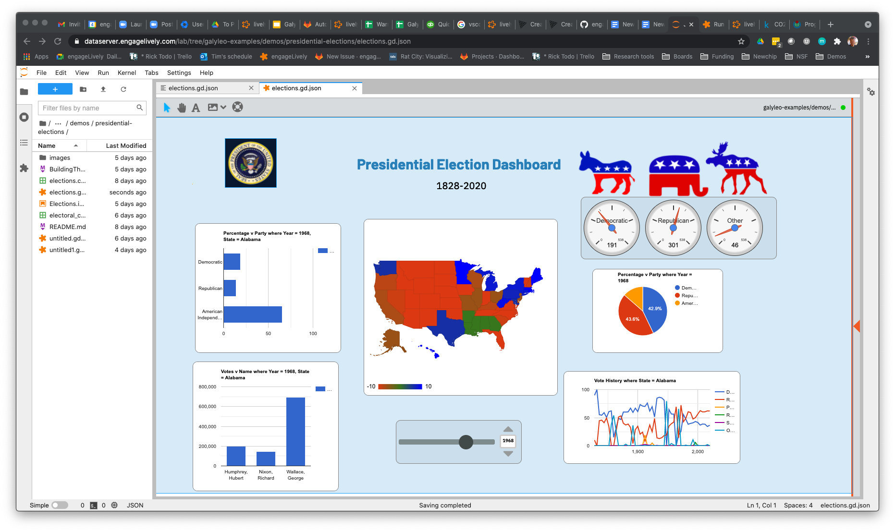

GETTING STARTED¶
Overview¶
Galyleo is a package for the drag-and-drop design and publication of interactive dashboards driven by Jupyter Notebooks. It is available as an extension to JupyterLab, and is also available for other Jupyter enviroments or other programs. A similar dashboard can be found here: .. _elections: https://editor.engagelively.com/lively.freezer/frozenParts/rick/US_Presidential_Election/index.html/.
This dashboard is designed entirely in Galyleo:
Galyleo was designed to fit seamlessly into the Jupyter workflow. A Galyleo document is stored on the Jupyter Hub’s storage system, and the Galyleo Editor is simply another tab in a standard JupyterLab environment. In other words, it is simply another tool in JupyterLab to complement the Notebook environment.
Galileo, of course, was the inventor of the telescope and the person who first say Jupiter’s moons; we are a visualization solution and we hope that our users will use our technology to make profound discoveries.
Tutorials and Demos¶
A number of tutorial and example projects can be found at _Galyleo Examples: https://github.com/engageLively/galyleo_examples.
Reporting an issue¶
Please use the bug-reporting button on the Galyleo toolbar to report an issue to us, or write galyleo_support@engagelively.com
Frequently Asked Questions¶
Is Galyleo free and open-source?
Yes. Galyleo is released under a BSD 3-clause license.
Can I use Galyleo with a Notebook using an R, Julia, or other kernel, or must I use Python?
The connection between the dashoard and the kernel is given by the Galyleo client, which is currently a Python module. So if the kernel can use Python modules, it can be used today. The Galyleo module is very simple, so we expect to implement it in other languages. Of course, it is also open-source, and the protocol is documented; so others are free to implement this as well.
Can I use other editors besides the Galyleo editor to edit my dashboard?
Yes. The dashboard’s disk and wire format is a JSON document, and the format is specified in the interchange format section.
What’s the underlying technology for the editor?
The underlying technology is lively.next, an MIT-licensed environment for developing broser-hosted graphical, interactive applications. You can find its repo here: _Lively Next: https://github.com/LivelyKernel/lively.next
Can I publish my dashboards to the web, or on my local intranet?
We’re developing and expect to release a web application which will take the URL for a Galyleo Dashboard document as a parameter and render the document in the browser. That page can be served from any convenient web server, on the web or on an intranet, and we will serve the web page ourselves. So publication will be as easy as storing the dashboard file on any resource that has an URL (e.g., in a github repo, or for that matter Google Drive with the appropriate permissions).